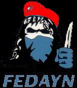
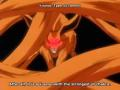
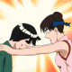

Forums galactiques > Taverne galactique : lieu de discussion informel > Mémoire de Cdt
Pages : 1
etic 26/06 ETU 12:40 | La bataille a commencé, cette nuit fut terrible, la plus dur sans doute depuis des lustres... Partout les immeubles étaient la proie des flammes. J’avançais au milieu de ce maelström de mort et de destruction en en essayant de lancer mes ordres. Ali Ey;(mon aide de camps), je veux deux missiles antiaérien en place sur cette colline, vous autres, préparez vous à me suivre, ça va saigner. Les confirmations des planètes ayant été perdues ce matin affluaient dans l’oreillette de mon communicateur. Je traversais en courant l’espace découvert afin de rejoindre le HQ. Les lasers ennemis se déversaient en des pluies torrentielles sur nous. Le béton commençait à fondre mais mon armure énergétique me protégeait. Le grondement de notre artillerie commençait à emplir l’air. Quelques parts dans le lointain, je pouvais entendre le hurlement des croiseurs et leurs bangs supersoniques successifs. Au même moment où je levais les yeux pour voir le carnage affligé, des traînées jaunes d’une flotte de croiseurs étaient en train de percer les nuages encore très denses à cette heure tardive de la nuit. Tandis que les appareils planaient au dessus de moi, les conteneurs de missiles étaient en train de se détacher. Je crus que la fin était proche. Mais dans un éclaircissement de Lune, je reconnu le blason de mon vieil ami venu à mon secours. Une flotte de 1500 croiseurs envahissait le ciel puis frégates, chasseurs et autres vaisseaux fluctuèrent à leurs tours dans l’air épais et cramoisi. Les tirs de missile puis ioniques commencèrent à se faire entendre dans le ciel nocturne. Je me serais cru en plein jour tellement la lumière était forte. L’ennemi goûtait la poussière à son tour après nous l’avoir fait subir durant les trois quart de cette nuit. Le soulagement se vit enfin sur mon visage, sauvée notre planète était, sauvé mon peuple était. Demain nous repartirons à l’attaque pour récupérer les planètes perdues ce matin. Demain, plus fort nous seront encore… et se tyran d’un jour, bientôt ne sera plus.. Etic, Cdt parmi tant d'autre de la rébellion contre .... |
Zoroastre 26/06 ETU 16:55 | Le capitaine Stein regardait le champ de bataille dévasté devant lui. Trois jours durant, notre artillerie avait pilonnée les forêts d’Ymnar. Là où auparavant s’élevaient ds rangs serrés d’arbres, il ne restait plus qu’une boue rouge parsemée de tronc éclatés. Des cratères béants défiguraient le paysage et de gros rochers gisaient là où les explosions les avaient fait voler. La terre fumait et le capitaine Stein se dit qu’elle devait être encore chaude. Heureusement qu’il était protégé par son armure énergétique. « Est-ce fait ? » demanda-t-il. « Est-ce vraiment terminé ? » « Terminé ! » m’exclamai-je. « Seigneur commandeur sachez que ca n’a pas encore commencé ». Je pointait mon doigts vers le sud. Stein vit une lueur pourpre émaner au loin dans l’horizon. « Je les vois, Commandeur Zoroastre », dit le capitaine. Graduellement, comme répondant à un signal commun, le sol se mit à bouger, soulevé comme un couvercle par des forces invisibles. « Ce ne sera plus long maintenant, Capitaine Stein. Je connais ces ennemis. On ne peut les occire avec des fusils et des épées. Que tous nos hommes regagnent leur poste et qu’ils se préparent à la plus importante bataille de leur vie. » « Des démons »s’exclama Stein. « Que dieu nous protège ! » Je hochais la tête. « Des démons peut-être pas, des êtres démoniaque cela est sur. Notre foi est maintenant notre meilleure arme face à eux. Que la révolution commance ». Seigneur Commandeur Zoroastre |
etic27/06 ETU 02:12 | Le ciel se leva comme il s’était couché…. La pénombre disparue au profit d’un soleil chaud et radieux. La nuit de galère était oubliée et vers le futur nous étions près à nous tourner. Les nouveaux croiseurs venaient juste d’arriver et tout était près pour les festivités. Je décidais de dormir un peu car le sommeil me manquait après cette nuit trop propice aux rebondissements. Sur le coup des 3h00, mon communicateur extra systémique se mis à vibrer, 550 messages en provenance de tous les systèmes et coordonnées arrivèrent dans un même grondement pour m’annonçaient des bombardements atomiques de partout. La bombe HA nous avait frappées 17 fois, mettant à feu et à sang des milliers d’immeubles. Par ce bombardement, ma flotte fut décimée, mon assaut prévu du être abandonné et mon moral était alors au plus bas. Je regardais le sol de rage, tapant le sol de mes deux points. Pourquoi, clamais-je dans un cri de désespoir. Mes rêves pour redonner un foyer aux miens étaient brisés par la faute d’un lâche se cachant dans les recoins sombres et reculés de la galaxie. J’étais au bord du gouffre ayant plus que mes yeux pour pleurer. Mon aide de camp en m’aidant à me relever vint me glisser quelques mots : « Cher commandant, cet individu nous a fait mettre un genou à terre mais la tête haute gardons et reprenons le combat. » Puis tournant les talons, il repartit. Ali Ey, lui criais je, fais chauffer les usines, appel tous les guildes que tu connais, on va avoir besoin de kamikazes pour ré équilibrer nos flottes et faire se qui était prévu… Attaquer !!! Je me relevais pour repartir de plus bel, le cœur battant et pensant à une idée contre de futurs bombardements HA. |
etic30/06 ETU 01:10 | Après cette violente rafale de Kamikazes qui s’était abattue sur les systèmes, nos pertes nous comptions, 35 planètes et des milliers de victimes étaient à déplorer. Mais qui sont ces misérables qui utilisent des armes aussi destructrices ? Qui sont ces misérables qui se cachent en ne donnant signe de vie que par bombes HA ou frappe de kamikazes ? Qui sont ces misérables qui veulent tous nous anéantir ? Encore pensif en cherchant les réponses à mes questions, je me demandais ce que nous devions faire pour réussir à survivre. Le tintement de mon communicateur retentit, s’était Ali Ey qui me communiquait par message que les kamikazes provenant des guildes étaient enfin arrivés. Une semaine que nous les attendions. Pouvoir attaquer nous allons enfin, me dis je pensivement, je ne connaissais pas le résultat futur mais il sera vraisemblablement mitigé. Je me demandais qu’elle serait la stratégie des autres, vont-ils faire comme moi, dois je me méfier de mes alliés. Certains m’inquiète par leurs changements de bords. Tout en regardant le ciel étoilé, une idée germa dans mon esprit, oui, nous allons faire comme ça, ce n’est pas une si mauvaise idée après tout. Ali Ey, contacte mon vieil ami, je vais avoir besoin de lui, enfin de lui avec sa flotte biens sur… et dis lui de me contacter, je viens d’avoir une idée, brillante idée même…. Puis, après avoir ranger mes rouleaux représentant les différents systèmes, je sortis faire une petite sieste…. Pourvu qu'à mon reveil, il n'y ai pas encore de nouveaux bombardement HA...(soupir) |
etic02/07 ETU 02:19 | Aujourd’hui, dans cette belle année galactique un nouveau jour commence. C’était un vendredi comme on continua à l’appeler dans ma province ; héritage et nostalgie de l’Ancien Empire de notre planète Mère : La Terre ou Terrus comme elle avait été renommée après la chute de l’Empire. Cette après midi, comme d’habitude depuis quelques semaines, un petit bombardement HA pour le déjeuner. Nous n’avons subis que 25 bombardements, je suis un peu surpris, je m’attendais à en recevoir un peu plus, les forces de frappes de ces lâches de Cdts s’essouffleraient elles un peu ? En tous cas, la précaution j’avais pris, d’éteindre mon communicateur extra systémique afin de ne pas être dérangé par des grondements incessant provenant des multiples messages pour me communiquer ce que je savais déjà : la perte de ma flotte de croiseurs lourds ; un total de plus de 100 vaisseaux positionnés en orbite autour des différents systèmes de la galaxie. Ceci ne m’étonnait plus, par cela je ne fus pas plus surpris car déjà prévenu mon équipe de renseignement m’avait, et bouger les croiseurs je ne pouvais car en notre défaveur le temps était … Une perte que je ne pouvais contourner mais dont le deuil j’ai pu préparer depuis. Nous allons pouvoir attaquer maintenant. Mes informateurs m’ont annoncé que ces lâches étaient presque éliminés, une affaire de quelques jours m’avaient ils certifié. Enfin, après eux, il faudra se trouver une nouvelle distraction pour lier les différents Cdts devant un but commun ou se trouver un nouveau souffle, personnellement, je crains le pire, l’Apocalypse j’attends avec de multiples Cdts qui se révolterons devant l’inexistante d’un unique patron…. Pensif, je regardais ce ciel d’un jaune orangé que peu être j’allais voir de moins en moins si l’Apocalypse il y a….. |
| Fedayn  02/07 ETU 07:40 | Les apoclypses sont entierment de votre faute. Vous pensez que c'est drole de bombarder au tapis chaque systeme six fois ? C'est assez ennuyeux. Si vous aviez respecté le communiqué 1 comme je vous l'avais demandé il n'y aurait pas eu de troisieme vague. Donc tenez vous en au communiqué 1 et il n'y aura pas de vague 4 et 5, cette fois ci je metterai le paquet. Ces bombes sont votre entiere responsabilité et vous ne pouvez vous en prendre qu'a vous meme qui preferez encore vivre sous le joug des tyrans. Fedayn, alteré. |
etic11/07 ETU 02:39 | Nouvelle semaine de cette année Galactique qui commence. Nous avons découvert Terrus, flambeau de l’ancien Empire, anciennement appelé Terre. Cependant, les preuves nous manque encore pour le certifier définitivement mais des ruines de bâtiments portant les griffes du vieil empire nous avons repéré. A force de chercher ce tyran de malheur, ce boucher sans nom, (je lui ferais que trop d’honneur si je continuais de lui donner des noms de cette sorte) nous sommes tombé sur cette planète, par mégarde certains dirons, par chance d’autre ajouterons mais trouvé nous l’avons fais. Finalement, cette vielle planète, longtemps courtisée, jamais atteinte est enfin découverte nous avons mise à blanc. Malheureusement, aucune âme à l’horizon n’a été trouvée, symbole d’un lointain passé, juste des blocs de béton régnant paisiblement sur des paysages sans visage et sans l’ombre d’une émotion. Cette planète est morte… Cet Empire est mort, elle me donne la chair de poule : - Ali Ey, criais-je, appelle le Portenef, nous rentrons… Nous avons suffisamment perdu de temps ici mais laisse néanmoins une flotte en orbite, je me méfie… La Guerre n’ai pas fini, elle ne fait que commencer…, hier 60 planètes nous avions perdu, aujourd’hui, 80 nous lui avons repris. Et demain… demain, une nouvelle bataille en perspective qui s’annonce avec nos flottes qui s’agrandissent de jour en jour pour rendre que plus intéressantes les futures stratégies d’attaques. Ce tyran est presque fini, nous approchons progressivement de ses dernières lignes, nous voyons la lumière du tunnel s'amplifier et la victoire s’annoncer. Ce n’est qu’une question de temps même si cette guerre a coûté la vie à bon nombre de petits commandants dont la fougue dont ils étaient animés leur aura été fatale…. |
etic15/08 ETU 16:51 | Une nouvelle ère a commencée, une ère de discorde et de chaos. De grands commandants aux l’Empires vastes nous ont quitté, laissant dans leurs désarrois, ruines et contemplations. Des champs de décombres dispersés dans tous leurs anciens systèmes nous montre les ravages des l’Apocalypses…. Du pouvoir a été acquis, mais de la reconnaissance et du prestige ont été obtenu par les batailles gagnées puis perdues…. Certains fanatiques nous ont aussi quittés ou vont le faire très prochainement, leurs fins par ailleurs est peu glorieuse car sans éclats, balayé et oublié de tous, nous en retiendrons que peu de chose. Dans nos mémoires ne seront conservées que leurs crimes affreux et leurs caractères psychotiques devant l’horreur de leurs gestes passés. Le pardon ne peuvent les sauver devant la cruauté de leurs actes….. Une aube nouvelle va arriver, les prophètes nous l’ont promis, ils l’appellent le « Reboote », un fort joli nom…. Mais en rien glorieux pour la galaxie actuelle Afin que nos propres histoires ne finissent pas dans les obscures ténèbres de l’au delà, moi scripte de la galaxie, j’incite tous les Cdts restant, petits ou grands, jeunes ou moins jeunes, à écrire leurs mémoires afin de n’être point oublié de nos futurs décendants et de leurs laisser une trace de notre passage. Car pire que la mort est l’oubli…. Je ne sais ce que nous réserve ce Reboote, je préfère ne pas l’imaginer, oublier les instants noirs de l’histoire…..gardons notre vécu et racontons le, ne pas être oublié ne dépends que de votre bon vouloir Commandant Etic ………Pour un avenir meilleur *** Message envoyé du Portenef Amral*** |
| Morcar Baughlir  15/08 ETU 23:28 | Morcar Baughlir vit le jour sur une ancienne planète agricole du sytème Troy, dans le secteur Gémini, dans une galaxie lointaine. Commençant sa carrière comme pilote privé, il fut rapidement remarqué par les force de la Confédération, l'organisation militaire locale, pour ces talents a toujours réussir à se sortir de situation abominables à moindre mal. Acceptant de s'engager, il fût bombarder officier quelque années plus tard. Quittant les pilotes pour entrer dans le rôle d'un diplomate, il reçut le titre de commandant alliantiste dans le 19ème système d'une galaxie nouvellement découverte. Prenant sa mission très au serieux il était prêt a toutes les concessions pour faire règner les idéaux auxquels il croyait : A savoir le respect, l'honneur, et surtout, la non-violence. Les jeunes sont toujours enclins à croire aux Utopie... Touchante est leur naïveté... |
| karctak  16/08 ETU 10:58 | Le representent Karctak , du jour ou il a pris le commandement de sa première planète jusqu'a sa fin prochaine , aura toujours fais de son mieu pour faire règner l'ordre sans violence mais l'idéal de certain lui ont fai comprendre qu'il ne pouvais pas. En effet beaucoup de commandant croi a la non-violence eternelle, mais cela est impossible. Nombreux sont ceux qui s'en sont rendu compte mais certain autres furent aveuglé par leur futur idéolagique qu'ils avaient en tête. Le commandant Karctak fût trahi comme beaucoup par le seigneur Arkk grand dirigent de l'alliance eternelle renaissante , karctak n'a jamais su pourquoi "renaissante" car il n'a jamais connu l'alliance eternelle avant Arkk. Ensuite un autre commadant pris les responsabilité , il s'agissai de Forest. Mais lui , pris le pouvoir pour se venger et non pour la paix. Se fut la deuxième trahison que subi Karctak et les autres fidel de l'alliance eternelle. Puis vint Dame Kela , la douce , mais son entreprise de créer Gandhi était un projet qui ne pouvais aboutir , du moin pas avec elle a sa tête , car rappelons le , Arkk et Fregger était des ami de Dame Kela et ces deux personnes étaient en train de faire une des plus destructrice des apocalypses. Dame Kela , complètement désemparé devant les agissement de ses amis , se suicida quelque temps après . Karctak , désormais , n'était plus dupe et savais exactement se qu'il allai advenir , et il ne s'était pas trompé... Un commandant du nom de Captain Pyok pris la succession de Gandhi. Sa politique ne pouvais aboutir a la paix se que Karctak lui rappelai souvent...probablement trop souvent...et certainement pas de la bonne façon... Le Captain Pyok ne voulais donc pas écouter Karctak et ses conseil mal placé , après tout c'était lui et non Karctak qui avait été chargé de diriger Gandhi. Quelques cycles plus tard Gandhi tomba en décadence et ses membres n'étaient plsu que des profiteur qui voulais gagner facilement en puissance . Karctak en était parti depuis longtemps. Après cela Karctak ne savai plus en quoi croir , il cru en l'Archimage qui recréa l'alliance eternelle avec eclat dans le forume diplomatique et fut élu a l'unanimité de toute l'assemblé représentissime des alliantistes. Karctak avai confiance mais l'archimage du partir...Une nouvelle déséption pour Karctak...L'archimage voulais qu'il s'occupe des affaire de l'alliance pendant son dépare, Karctak fit de son mieu étant le commandant le plus puissant que comptaient les alliantistes il pris son role très a coeur. Mais la coalition, n'avancai pas. La 4 ème apocalypse arriva alors... Karctak fut casiment anéanti.SA puissance fut réduite a néant. Il eu du mal a survir mais avai juré de ne jamais abandonner.il s'allia donc a une coalition de révolutionnair contre les tyrans. Cette coalition s'appelai l'union des mondes. Karctak mis très longtemp pour se remettre de l'apocalypse. Désormais il peu agir et c'est se qu'il va faire. |
Morcar Baughlir16/08 ETU 12:40 | A peine ça mission commencé, Morcar Baughlir reçut une communication de son maître de flotte : "-Colonel Emerson, a vos ordre. Nous avons detectez une flotte étrangère qui se rapproche de notre planète, devons nous prendre les devant et les arraisonné ? - Non, je préfère que vous les espionniez, voir quel est leur activité. -A vos ordres !" Un jour après, Morcar reçut un message d'une coalition, nommé l'Alliance Eternelle, commandé par le commandant Arkk. Ce qui lui sauvat la vie. Les troups du commandant NonAle, ne venait pas pour faire une partie d'echec, mais bien pour envahir New Constantinople. Totalement prise par surprise, les troupes de Morcar furent balayé et New Constantinople fut prise. S'échappant a bord d'un chasseur, Morcar tentant de reprendre sa planète avec les restes de sa flotte, en vain. Il ressut alors un communiqué : "Commandant Forest, membre de l'Alliance Eternelle. Je viens a votre secour, tenez bon !" |
karctak17/08 ETU 11:38 | Un compte rendu d'invasion venais d'arrivé sur SLAADWORLD. J'était sur que cela arriverai. Forest m'envoya alors un comuniqué. " Il faut se vengé Karctak !! j'ai repris les reine de l'alliance eternelle pour cela !! Je suis sur que si tout le monde me donne sa flotte je pourrais vaincre !! Je suis désolé de ne pas t'avoir donné la possibilité de gérer ton poste au sains de l'alliance mais bon sinon j'auai jamais pu en arriver la ou j'en suis et je suis sur que tu me comprendra." Erreur je nbe compris pas. L'alliance eternelle était une alliance pas uniquement un outil de vengence. Forest n,'a pas aidé l'alliance comme il l'aurai du . Il n'a pas voulu que je l'aide et l'archimage n'a pas non plus pu l'aider a retrouver le droit chemin , trop pris pour espionner l'alliance sombre. J'aurais du faire de même plutot que d'attendre. J'ai fai une erreur...croir en des dirigent qui ne pensai qu'a eux. |
Pages : 1
Forums galactiques > Taverne galactique : lieu de discussion informel > Mémoire de Cdt